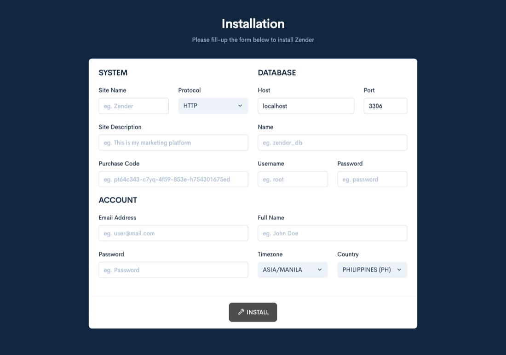

Getting started
Installation
Zender ships with a guided web installer. This page walks through the whole process in order — from getting the files onto your server to your first successful login.

1. Get the files onto your server
Upload the contents of the install package to your web server, using FTP, your host's file manager, or however you normally move files onto it. Zender can live at your domain's root or inside a subdirectory — it detects which one it's running from automatically, so either works.
If your server runs Apache, the bundled .htaccess file handles the
rewrite rules Zender needs on its own, as long as mod_rewrite is
enabled. If it runs nginx, include the bundled .nginx.conf file from
your server block. If it runs LiteSpeed, translate the same rewrite logic into
your LiteSpeed rewrite rules panel — LiteSpeed doesn't read Apache-style
.htaccess rewrites the same way.
2. Set file and folder permissions
Your web server user needs write access to the directory you installed into — the installer has to create its configuration file and generate the default theme's stylesheets before it finishes.
3. Create a database
Create a MySQL or MariaDB database through your host's control panel (or the
command line, if you have shell access) before you open the installer — Zender
imports its schema into a database you already have; it does not create one for
you. Set its collation to a utf8mb4 variant so it can store the full
range of characters Zender's schema expects, including emoji in messages. Note
the database's host, port, name, username, and password — you'll need all five on
the next page.
4. Browse to your site
Open your site's URL in a browser. Since no configuration file exists yet, Zender shows you the installer form instead of the normal application.
5. Fill in the installer form
Every one of the following fields is required, or the installer rejects the submission with "Some fields are empty!":
| Field | What it's for |
|---|---|
| Site name | Your site's name, shown across the dashboard and public pages. |
| Protocol | HTTP or HTTPS — set this to match how your site is actually served. |
| Site description | A short description used in a few places on the public site. |
| Purchase code | Your license/purchase code. |
| Database host, port, name, user, password | Used to import the schema into your database and connect to it afterward. |
| Admin name, email, password | Used to create your first user account. |
| Timezone | Applied to the new admin account. |
| Country | Applied to the new admin account. |
Validation rules
- The admin name must meet a minimum length, or the installer responds "Name is too short!".
- The email address must be a valid format, or the installer responds "Invalid email address!".
- The admin password must be at least 5 characters, or the installer responds "Password is too short!".
- The timezone must be one of the values offered in the dropdown — anything else is rejected as "Invalid Request!".
- The country must be one of the values offered in the dropdown — anything else is also rejected as "Invalid Request!".
Because the timezone and country fields are populated as dropdowns, you'll only hit these last two errors if the form is submitted with a value that didn't come from the page itself.
6. What happens when it succeeds
Once every field validates and the database import succeeds, the installer:
- Imports the full database schema into your database.
- Generates a random security token and writes it, together with your database credentials, to its configuration file.
- Creates your admin account from the name, email, password, timezone, and country you supplied.
- Saves your site name, description, purchase code, and protocol as system settings.
- Compiles the default theme's stylesheets so the dashboard and public site have working styles immediately.
- Removes itself — the installer form, its script, and the raw schema file are all deleted once installation completes, so the form cannot be run a second time.
After this, reload your site and you should see the normal login page. Continue to Configuration for what to check next.